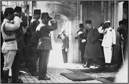

VI. Mehmed Vahideddin (1861-1926)
VI. Mehmed Vahideddin, 36. ve Son Osmanlı Padişahı’dır.
Sultan Abdülmecid’in, Gülistan Münire Dördüncü Kadınefendi’den olan, sekizinci oğludur. Kendisinden önce taht’a geçen V. Murad, II. Abdülhamid ve V. Mehmed Reşad’ın küçük kardeşidir.
Vahideddin, küçük yaşlarda annesini ve babasını kaybetmiştir. Şayeste Hanım tarafından büyütülmüştür. Taht’a geçme ihtimali düşük olduğu için gözden uzakta bir hayat sürmüştür. Küçük yaşlardan itibaren medrese eğitimi almış, bu nedenden dolayı da şeri konularda konuşabilecek bilgiye sahiptir.
Vahideddin, ilk evliliğini Emine Nazikeda Hanım ile yapmıştır. Başka bir eş almaması şartı ile Vahideddin’e, Emine Nazikeda verilmiştir. Ancak ilerleyen yıllarda Sabiha Sultan ve Fatma Ulviye Sultan doğduktan sonra doktorların, bir daha çocuklarının olmayacağını bildirmeleri üzerine, eşinin de rızasını da alarak başka evlilikler yapmıştır.
Uzun yıllar boyunca Çengelköy’de Alexandre Vallaury’ye yaptırdığı köşkte kimseye karışmadan yaşamıştır.
Padişah olması çok uzak ihtimal gibi görünüyordu. O sırada V. Mehmed Reşad tahtta idi. Veliaht ise Sultan Abdülaziz’in oğlu Yusuf İzzeddin Efendi idi. Yusuf İzeddin, yurt dışına çıkacaktı. Yurt dışına çıkacağı gün intihar etmesi sonucu Vahideddin, veliahtlık makamına yükseldi. 3 Temmuz 1918’de Sultan Reşat’ın ölümü üzerine 57 yaşında taht’a çıktı.
Taht’a çıkışından kısa bir süre sonra şöyle dediği anlatılır:
“Ben bu makam için hazırlanmadım. Çocukluğumdan beri vücutça rahatsız olduğumdan layıkıyla tahsil edemedim. Yaşım kemale erdi, dünyada bir emelim kalmadı. Biraderle hangimizin evvel gideceğimiz malum olmadığından, bu makamı bekleyişte değildim. Fakat takdiriilahî böyle teveccüh etti, bu ağır vazifeyi deruhde eyledim. Şaşmış bir hâldeyim, bana dua ediniz.”
Vahideddin taht’a çıktığı zaman birçok sorun vardı. Öncelikli olarak 1. Dünya Savaşı’nı en az hasarla bitirmek, öbür sorun ise İttihat ve Terakki rejimine karşı alternatif oluşturmak... Taht’a geçtikten sonra İttihat ve Terakki rejimine muhalefetiyle tanınan Mustafa Kemal Paşa’yı, Suriye cephesi kumandanlığına atar.
8 Ekim 1918’de savaşın kaybedileceğinin anlaşılması üzerine Talât Paşa başkanlığındaki İttihat ve Terakki Kabinesi istifa etti. Yerine Ahmed İzzed Paşa başkanlığında bir kabine kuruldu ve bu kabine, savaşı bitiren Mondros Mütarekesi’ni 30 Ekim 1918’de imzalandı. İzzed Paşa’nın “artçı” kabinesinin de sadece 25 gün süren iktidardan sonra istifası üzerine Padişah, diplomat Ahmed Tevfik Paşa’yı 13 Kasım’da sadrazamlığa getirdi.
Birinci Dünya Savaşı’nın şartları kabul edilmemiş ve Mustafa Kemal önderliğinde Kurtuluş Savaşı başlatılmıştır. Kurtuluş Savaşı 9 Eylül 1922’de İzmir’in kurtuluşu ve 13 Ekim 1922’de Mudanya Mütarekesi ile sona erdi. Bu sırada İstanbul henüz itilaf devletleri askerlerinin işgali altındaydı. 6 Ekim’de TBMM ordusunu temsilen Refet Bele komutasındaki bir askerî birlik İstanbul’a girdi.
Bugünlerde basın organları, Vahideddin aleyhinde geniş çaplı ve kamuoyunda etki yapan yayınlarda bulundular. Padişah Vahideddin’in, Mustafa Kemal Paşa ve arkadaşları hakkında ölüm fermanı imzalamasının ve Millî Mücadele karşıtı tavırlarının, son padişahın vatan haini olduğunu açıkça göstermekte olduğunu düşünen halk arasında bazı gruplarca hakaret ve tehdit içeren gösteriler yapıldı.
Vahideddin’in, 11 Nisan 1920 tarihli kararname ile başlayan girişimleri, “isyan” kavramının da ötesinde iç savaş girişimi olarak kabul edilmiştir.
Kurtuluş Savaşı zafer ile neticelendikten sonra Türkiye Büyük Millet Meclisi hükümeti, 1 Kasım 1922’de, hilafet ile saltanatın ayrıldığını ve saltanatın kaldırıldığını, bir kanun ile ilan etti. Vahideddin’in adı hutbelerden kaldırıldı. Bunun sonucunda Sultan Vahideddin, 17 Kasım 1922 Cuma günü Dolmabahçe Sarayı’ndan Malaya harp gemisi tarafından alınıp, Malta Adası’na götürüldü.

Sultan Vahideddin İstanbul’dan Ayrılırken
1922 sonunda Hicaz Kralı Hüseyin’in daveti üzerine hacca gitti. 20 Nisan 1923 tarihine kadar Hicaz’da kalır ancak, İngiltere’nin baskısı üzerine buradan ayrılır.
Bir süre İtalya’nın Cenova kentinde yaşar. 11 Haziran 1923’te San Remo kasabasında, Mısır kraliyet ailesinden bir prensin maddi yardımıyla kiralanan bir villaya taşınır. Bu dönemde anılarını kayda geçirmiştir. Başlangıç bölümünü kendi el yazısıyla yazar, kalan bölümlerini de yakınlarına dikte ettirir.
San Remo’da kötü şartlar içerisinde son günlerini yaşayıp, burada hayata gözlerini yumar. 16 Mayıs 1926’da vefat eden Padişah’ın cenazesi Şam’a getirilerek, Sultan Selim Camii kabristanına defnedilir.
EŞLERİ
1- Emine Nazik-Edâ Baş Kadınefendi
2- Seniye Inşirah Hanımefendi
3- Şadiye Müveddet Kadınefendi
4- Nevvare Baş Hanımefendi
5- Nimet Nevzad Hanımefendi
ERKEK ÇOCUKLARI
Mehmed Ertuğrul Efendi
KIZ ÇOCUKLARI
1- Fenire Sultan
2- Fatma Ulviye Sultan
3- Rukiye Sabiha Sultan